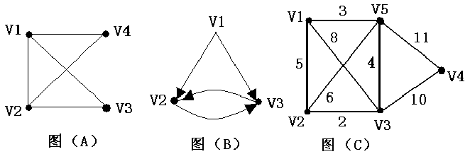
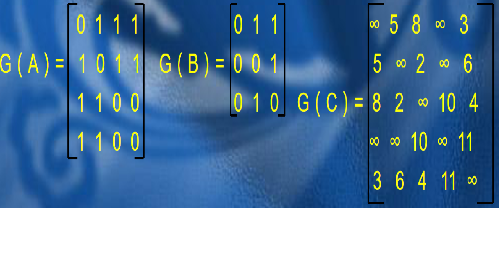
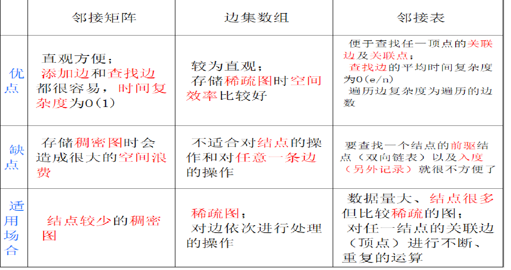

原文连接:https://www.cnblogs.com/wuxiangnong/p/10816475.html
图的概念、存储及遍历
图是一种特殊的数据结构，由点和边构成，它可以用来描述元素之间的网状关系，这个网状没有顺序，也没有层次，就是简单的把各个元素连接起来。图在我们的生活中也十分常见，地图就是最简单的例子。
图的基本概念：
顶点集合为V，边集合为E的图记作G=(V,E)。另外，G=(V,E)的顶点数和边数分别为|V|和|E|。对于两个图G和G'，如果G'的顶点集合与边集合均为G的顶点集合与边集合的子集，那么称G'是G的子图。子图实际上就是一张图里面小一点的图，也可以是点，不难理解。
有向图：图的边有方向，只能按箭头方向从一点到另一点。
无向图：图的边没有方向，可以双向。

如图，（a)就是有向图，（b）就是无向图。
顶点的度：无向图中连着顶点的边的数目。
顶点的入度和出度：有向图中，以这个顶点为起点的边的数量称为这个顶点的出度；以这个顶点为终点的边称为这个顶点的入度。
边权：边的费用，可以形象的理解为“过路费”。对于一张存在边权的图，我们称为“带权图”。
连通：如果图中两点U,V之间存在一条由U经过若干边、点到达V的路径，则称U，V是连通的。
回路：起点和终点相同的路径，称为“回路”或“环”。另外，不存在环的有向图称为Directed Acyclic Graph(DAG)。
完全图：每个点都与其它所有的点有连边的图。
n个点的有向完全图的边数计算方法：每个点都可以自己为起点连出n-1条边，因为除了它自己，剩下的n-1个点都能作为它连边的终点，而整张图有n个点，所以最终结果为：n(n-1)条边；n个点的无向完全图的边数计算方法：因为是无向的，那么a连到b、从b连到a这两条边只能算作一条，所以，无向完全图的边数应该是有向完全图的一半，即：n(n-1)/2条。
稀疏图：一张边数远远少于完全图的图
稠密图：一张边数接近完全图的图
图的存储：
对于如何存储一张图，我们主要有三种方法。
（1）邻接矩阵：对于一张图来说，我们可以存储点的信息，也可以存储边的信息，而邻接矩阵存储的是点的信息。对于一个点，我们需要知道的是它和哪些点有连边，有时还要知道连边的边权。那么，不难想到用二维数组来实现。
用map[u][v]来表示u和v 之间是否有连边。如果u，v之间有连边，那么map[u][v]=1或边权，如果是带全图就赋值边权，否则赋值1；反之，赋值0或无穷大，如果是无向图，就加上map[v][u]= map[u][v]。
对于带权图，我们极可能设计对整张图的计算，所以要赋值边权及无穷大，无穷大比无穷小要方便得多，因为在很多算法中，我们需要边权尽量小，如果赋值无穷小，那不是优先选这条实际上不存在的边了？还可以这样想：我们的边权相当于“过路费”，我们现在无法从u到达v，你觉得是因为过路费太贵了还是过路费太便宜了？肯定是由于过路费太贵，我们付不起。这样一想，就不难理解了。

对于上面三幅图，它们的邻接矩阵分别如下：

注意，邻接矩阵不能存储有重边的图，因为数组里的每一个位置只能记录一个值。那么，邻接矩阵的空间复杂度就是O(n2)，n为点数，添加及查询边的复杂度均为O(1)。这种方式适合存储稠密图，因为它申请的空间是准备用来存储每个点到其它所有点的边的边权的，如果是稀疏图，会造成很大的浪费。
代码实现：
//有向图
for(i=1;i<=n;i++)
for(j=1;j<=n;j++)
map[i][j]=0x7ffffff;
for(i=1;i<=n;i++)map[i][i]=0;
for(i=1;i<=e;i++)
{
scanf("%d%d%d",&u,&v,&w);
map[u][v]=w;
}（2）边集数组：除了存储点的信息，我们还可以存储边的信息。对于一条边，我们需要知道它的起点、终点以及边权，那么，我们不难想到可以用结构体来存储。这种存储方式非常简单粗暴,适用于对边依次进行处理，但不适用于对顶点的处理和对任意一条边的处理，因为边集数组查询边的复杂度为O(e)，e为边数，这个不难理解，因为我们需要遍历整个数组。如果要处理顶点，那么每一次顶点的拓展都要花费O(e)的时间，时间复杂度非常大，而每次查找任意一条边也要花费O(e)的时间，所以均不适用。如果是对边的顺次处理，那来一遍循环就ok了。
从空间上来看，边集数组适用于稀疏图，因为要存储每一条边，所以边集数组的空间复杂度为O(e)，插入边的复杂度为O(1)。根据上面说的完全图边数的计算方法，即使是无向图，当n=10000时，完全图的边数也达到了49995000，完全存不下，因此适用于稀疏图。
代码实现：
for(i=1;i<=e;i++)
{
scanf("%d%d%d",&u,&v,&w);
e[i].u=u;
e[i].v=v;
e[i].len=w;
}（3）邻接表：边集数组的缺陷在于边与边之间没有联系，那我们想办法将边联系起来。能联系在一起的边，必然要有什么共同点，我们不妨让它们的某个东西相同。什么东西相同呢？边权吗？把边权相等的边放在一起对我们没有任何帮助。本质上，我们对边集数组的不满在于它无法快速地进行点的拓展，第一它不知道这个点连出了哪些边，第二它也不知道连出了几条，这才是最要命的。
问题很明确，我们需要快速地知道一个点连出的边，那我们不妨把它们放在一起。别忘了，我们还需要很快地知道这个点连出的一条边的下一条边。有点拗口，我们不妨一个点连出的边编号1、2、3，我们需要快速地知道1下一条是2，2下一条是3，这样的形式，我们可以采用链表的形式来存储。将同一个顶点连出的边链接在同一个边链表中，链表里的每一个点代表一条边，这个点叫做边结点。
现在，我们要记录的每个边结点的信息稍有变动：我们要记录这条边的终点，这条边的边权，以及这条边的上一条边，因为我们采用的是链表的形式，所以要记录前驱，当然你也可以抽象地理解为：这条边的下一跳边，因为实现的时候处理完这条边下一个就处理我们记录的这下（上）一条边了，这个操作依然可以用结构体实现。然后，我们还要记录每个点连出的最后一条边，同样可以抽象理解为第一条边。这样，我们每次拿到这个点连出的第一条边，然后顺着第一条慢慢往下拿到第二条、第三条，时间复杂度均为O()，比边集数组快飞了。
邻接表的空间复杂度为O(n+e)，我们可以算一下：首先，我们至少需要O(n)的数组来存放每个点连出边的集合，然后我们又需读入了e条边，所以复杂度为O(n+e)。查询边的复杂度为O(Mi)，Mi为由vi连出的边的数目，插入边的复杂度为O(1)。根据空间复杂度的计算，可以得出：邻接表同样适用于稀疏图。
struct edge
{
int to,len,last;
}e[100001];//邻接表
int first[10001];
//每个点连出的最后（第一）条边
int len=0;//当前边的总数，方便对边的存储
void add(int u,int v,int w)
{
len++;
e[len].to=v;
e[len].len=w;
e[len].last=first[u];
first[u]=len;
}三种方式的比较：

图的遍历：
我们想要对顶点进行操作，必然要对图进行遍历。图的遍历有两种，都是我们耳熟能详的：深度优先遍历、广度优先遍历，具体的思想和搜索一模一样，这里不再重复。
深度优先遍历：
//邻接表
void dfs(int dep)
{
blablabla......
int i;
for(i=first[dep];i;i=e[i].last)
if(b[a[i].to]==0)
{
b[a[i].to]=1;
dfs(a[i].to);
b[a[i].to]=0;
}
}广度优先遍历：
void bfs()
{
int head=0,tail=1;
q[tail]=x;//x表示我们最开始的起点
b[x]=1;
while(head<tail)
{
head++;
int i,t=q[head];
for(i=first[t];i;i=a[i].last)
if(b[a[i].to]==0)
{
blablabla......
b[a[i].to]=1;
q[tail++]=a[i].to;
}
}
}